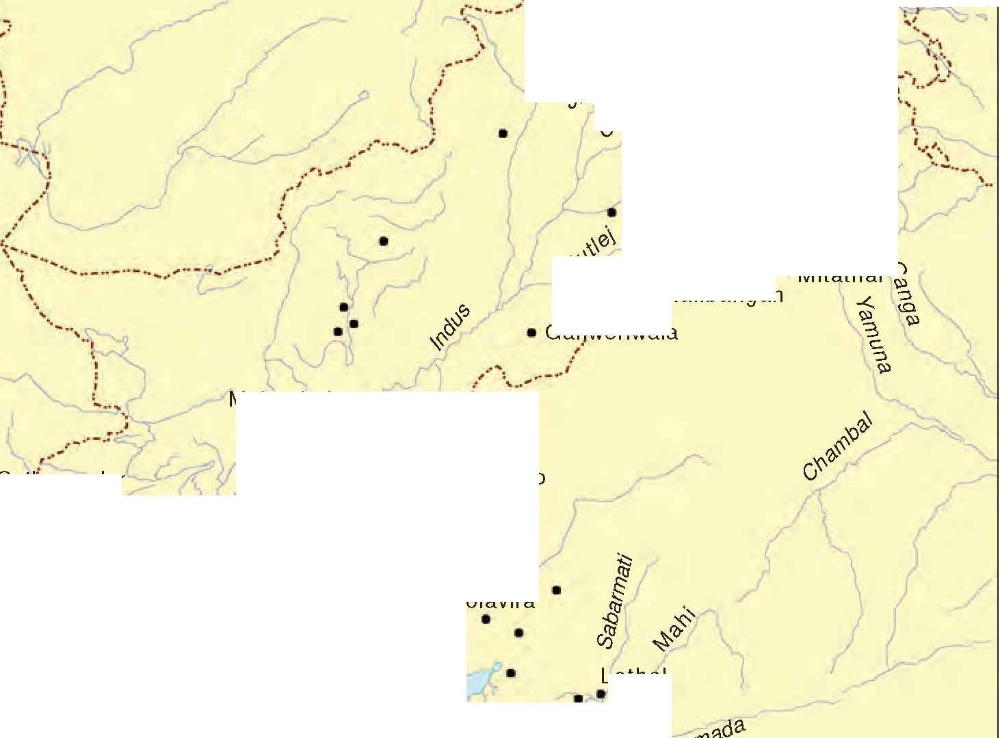

Fig. 1.5
Reservoir at Dholavira
Note the masonry work.

THEME ONE
The Harappan Civilisation
The Harappan seal (Fig. 1.1) is possibly the most distinctive artefact of the Harappan or Indus valley civilisation. Made of a stone called steatite, seals like this one often contain animal motifs and signs from a script that remains undeciphered. Yet we know a great deal about the lives of the people who lived in the region from what they left behind -their houses, pots, ornaments, tools and seals - in other words, from archaeological evidence. Let us see what we know about the Harappan civilisation, and how we know about it. We will explore how archaeological material is interpreted and how interpretations sometimes change. Of course, there are some aspects of the civilisation that are as yet unknown and may even remain so.
Fig. 1.1
A Harappan
Terms, places, times
The Indus valley civilisation is also called the Harappan culture. Archaeologists use the term “culture” for a group of objects, distinctive in style, that are usually found together within a specific geographical area and period of time. In the case of the Harappan culture, these distinctive objects include seals, beads, weights, stone blades (Fig. 1.2) and even baked bricks. These objects were found from areas as far apart as Afghanistan, Jammu, Baluchistan (Pakistan) and Gujarat (Map 1).
Named after Harappa, the first site where this unique culture was discovered (p. 6), the civilisation is dated between c. 2600 and 1900 bce. There were earlier and later cultures, often called Early Harappan and Late Harappan, in the same area. The Harappan civilisation is sometimes called the Mature Harappan culture to distinguish it from these cultures.
Fig. 1.2
Beads, weights, blades
You will find certain abbreviations, related to dates, in this book.
BP stands for Before Present
BCE stands for Before Common Era
CE stands for the Common Era. The present year is 2015 according to this dating system.
c. stands for the Latin word circa and means “approximate.”
Manda
Harappa
Rakhigarhi
Banawali
'Mitathal® Kalibangan
cZ .
Mohenjodaro =
Sutkagendor
Arabian Sea
Map 1
Some important
Mature Harappan sites
Sketch map not to scale
Amri. • Balakot
Lothal
Nageshwar Rangpur
KobDiji
Ganweriwala
Chanhudaro
Dholavira
|
Early and Mature Harappan cultures | ||
|
Look at these figures for the number of settlements in Sind and Cholistan (the desert area of Pakistan bordering the Thar Desert). SIND CHOLISTAN Total number 106 239 of sites | ||
|
Early Harappan sites |
52 |
37 |
|
Mature Harappan sites |
65 |
136 |
|
Mature Harappan settlements on new sites |
43 |
132 |
|
Early Harappan sites abandoned |
29 |
33 |
There were several archaeological cultures in the region prior to the Mature Harappan. These cultures were associated with distinctive pottery, evidence of agriculture and pastoralism, and some crafts. Settlements were generally small, and there were virtually no large buildings. It appears that there was a break between the Early Harappan and the Harappan civilisation, evident from large-scale burning at some sites, as well as the abandonment of certain settlements.
If you look at Maps 1 and 2 you will notice that the Mature Harappan culture developed in some of the areas occupied by the Early Harappan cultures. These cultures also shared certain common elements including subsistence strategies. The Harappans ate a wide range of plant and animal products, including fish. Archaeologists have been able to reconstruct dietary practices from finds of charred grains and seeds. These are studied by archaeo-botanists, who are specialists in ancient plant remains. Grains
found at Harappan sites include wheat, barley, lentil, chickpea and sesame. Millets are found from sites in Gujarat. Finds of rice are relatively rare.
Animal bones found at Harappan sites include those of cattle, sheep, goat, buffalo and pig. Studies done by archaeo-zoologists or zooarchaeologists indicate that these animals were domesticated. Bones of wild species such as boar, deer and gharial are also found. We do not know whether the Harappans hunted these animals themselves or obtained meat from other hunting communities. Bones of fish and fowl are also found.
2.1 Agricultural technologies While the prevalence of agriculture is indicated by finds of grain, it is more difficult to reconstruct actual agricultural practices. Were seeds broadcast (scattered) on ploughed lands? Representations on seals and terracotta sculpture indicate that the bull was known, and archaeologists extrapolate from this that oxen were used for ploughing. Moreover, terracotta models of the plough have been found at sites in Cholistan and at Banawali (Haryana).
Archaeologists have also found evidence of a ploughed field at Kalibangan (Rajasthan), associated with Early Harappan levels (see p. 20). The field had two sets of furrows at right angles to each other, suggesting that two different crops were grown together.
Fig. 1.3
A terracotta bull
Archaeologists have also tried to identify the tools used for harvesting. Did the Harappans use stone blades set in wooden handles or did they use metal tools?
Most Harappan sites are located in semi-arid lands, where irrigation was probably required for agriculture. Traces of canals have been found at the Harappan site of Shortughai in Afghanistan, but not in Punjab or Sind. It is possible that ancient canals silted up long ago. It is also likely that water drawn from wells was used for irrigation. Besides, water reservoirs found in Dholavira (Gujarat) may have been used to store water for agriculture.
O Discuss...
Are there any similarities or differences in the distribution of settlements shown on Maps 1 and 2?
Source 1
Fig. 1.4
Copper tools
Processing of food required grinding equipment as well as vessels for mixing, blending and cooking. These were made of stone, metal and terracotta. This is an excerpt from one of the earliest reports on excavations at Mohenjodaro, the best-known Harappan site:
। O Do you think these tools could have been used for harvesting?
Fig. 1.5
Reservoir at Dholavira
Note the masonry work.
Saddle querns ... are found in considerable numbers ... and they seem to have been the only means in use for grinding cereals. As a rule, they were roughly made of hard, gritty, igneous rock or sandstone and mostly show signs of hard usage. As their bases are usually convex, they must have been set in the earth or in mud to prevent their rocking. Two main types have been found: those on which another smaller stone was pushed or rolled to and fro, and others with which a second stone was used as a pounder, eventually making a large cavity in the nether stone. Querns of the former type were probably used solely for grain; the second type possibly only for pounding herbs and spices for making curries. In fact, stones of this latter type are dubbed “curry stones” by our workmen and our cook asked for the loan of one from the museum for use in the kitchen.
From Ernest Mackay, Further Excavations at Mohenjodaro, 1937.
O Discuss...
What is the evidence used by archaeologists to reconstruct dietary practices?
Fig. 1.6 Saddle quern
I---------------------1
| O Archaeologists use present-day analogies to try | and understand what ancient artefacts were used for. Mackay was comparing present-day querns with what he found. Is this a useful strategy?
i_____________________i
Perhaps the most unique feature of the Harappan civilisation was the development of urban centres. Let us look at one such centre, Mohenjodaro, more closely. Although Mohenjodaro is the most well-known site, the first site to be discovered was Harappa.
The settlement is divided into two sections, one smaller but higher and the other much larger but
Fig. 1.7
Layout of Mohenjodaro
C How is the Lower Town different from the Citadel?
The plight of Harappa
Although Harappa was the first site to be discovered, it was badly destroyed by brick robbers. As early as 1875, Alexander Cunningham, the first Director-General of the Archaeological Survey of India (ASI), often called the father of Indian archaeology, noted that the amount of brick taken from the ancient site was enough to lay bricks for “about 100 miles” of the railway line between Lahore and Multan. Thus, many of the ancient structures at the site were damaged. In contrast, Mohenjodaro was far better preserved.
Fig. 1.8
A drain in Mohenjodaro
Notice the huge opening of the drain.
lower. Archaeologists designate these as the Citadel and the Lower Town respectively. The Citadel owes its height to the fact that buildings were constructed on mud brick platforms. It was walled, which meant that it was physically separated from the Lower Town.
The Lower Town was also walled. Several buildings were built on platforms, which served as foundations. It has been calculated that if one labourer moved roughly a cubic metre of earth daily, just to put the foundations in place it would have required four million person-days, in other words, mobilising labour on a very large scale.
Consider something else. Once the platforms were in place, all building activity within the city was restricted to a fixed area on the platforms. So it seems that the settlement was first planned and then implemented accordingly. Other signs of planning include bricks, which, whether sun-dried or baked, were of a standardised ratio, where the length and breadth were four times and twice the height respectively. Such bricks were used at all Harappan settlements.
One of the most distinctive features of Harappan cities was the carefully planned drainage system. If you look at the plan of the Lower Town you will notice that roads and streets were laid out along an approximate “grid” pattern, intersecting at right angles. It seems that streets with drains were laid out first and then houses built along them. If domestic waste water had to flow into the street drains, every house needed to have at least one wall along a street.
While most Harappan settlements have a small high western part and a larger lower eastern section, there are variations. At sites such as Dholavira and Lothal (Gujarat), the entire settlement was fortified, and sections within the town were also separated by walls. The Citadel within Lothal was not walled off, but was built at a height.
The Lower Town at Mohenjodaro provides examples of residential buildings. Many were centred on a courtyard, with rooms on all sides. The courtyard was probably the centre of activities such as cooking and weaving, particularly during hot and dry weather. What is also interesting is an apparent concern for privacy: there are no windows in the walls along the ground level. Besides, the main entrance does not give a direct view of the interior or the courtyard.
Every house had its own bathroom paved with bricks, with drains connected through the wall to the street drains. Some houses have remains of staircases to reach a second storey or the roof. Many houses had wells, often in a room that could be reached from the outside and perhaps used by passers-by. Scholars have estimated that the total number of wells in Mohenjodaro was about 700.
Source 2
The most ancient system yet discovered
About the drains, Mackay noted: “It is certainly the most complete ancient system as yet discovered.” Every house was connected to the street drains. The main channels were made of bricks set in mortar and were covered with loose bricks that could be removed for cleaning. In some cases, limestone was used for the covers. House drains first emptied into a sump or cesspit into which solid matter settled while waste water flowed out into the street drains. Very long drainage channels were provided at intervals with sumps for cleaning. It is a wonder of archaeology that “little heaps of material, mostly sand, have frequently been found lying alongside drainage channels, which shows ... that the debris was not always carted away when the drain was cleared”.
From Ernest Mackay, Early Indus Civilisation, 1948.
Drainage systems were not unique to the larger cities, but were found in smaller settlements as well. At Lothal for example, while houses were built of mud bricks, drains were made of burnt bricks.
I-----------------------1
| C Where is the courtyard? Where are the two |
| staircases? What is the entrance to the house like? | i_______________________i
Fig. 1.9
This is an isometric drawing of a large house in Mohenjodaro.
There was a well in room no 6.
Fig. 1.10
Plan of the Citadel
It is on the Citadel that we find evidence of structures that were probably used for special public purposes. These include the warehouse - a massive structure of which the lower brick portions remain, while the upper portions, probably of wood, decayed long ago - and the Great Bath.
The Great Bath was a large rectangular tank in a courtyard surrounded by a corridor on all four sides. There were two flights of steps on the north and south leading into the tank, which was made watertight by setting bricks on edge and using a mortar of gypsum. There were rooms on three sides, in one of which was a large well. Water from the tank flowed into a huge drain. Across a lane to the north lay a smaller building with eight bathrooms, four on each side of a corridor, with drains from each bathroom connecting to a drain that ran along the corridor. The uniqueness of the structure, as well as the context in which it was found (the Citadel, with several distinctive
buildings), has led scholars to suggest that it was meant for some kind of a special ritual bath.
O Discuss...
Which of the architectural features of Mohenjodaro indicate planning?
O Are there other structures on the Citadel apart from the warehouse and the Great Bath?
Archaeologists generally use certain strategies to find out whether there were social or economic differences amongst people living within a particular culture. These include studying burials. You are probably familiar with the massive pyramids of Egypt, some of which were contemporaneous with the Harappan civilisation. Many of these pyramids were royal burials, where enormous quantities of wealth was buried.
At burials in Harappan sites the dead were generally laid in pits. Sometimes, there were differences in the way the burial pit was made - in some instances, the hollowed-out spaces were lined with bricks. Could these variations be an indication of social differences? We are not sure.
Some graves contain pottery and ornaments, perhaps indicating a belief that these could be used in the afterlife. Jewellery has been found in burials of both men and women. In fact, in the excavations at the cemetery in Harappa in the mid-1980s, an ornament consisting of three shell rings, a jasper (a kind of semi-precious stone) bead and hundreds of micro beads was found near the skull of a male. In some instances the dead were buried with copper mirrors. But on the whole, it appears that the Harappans did not believe in burying precious things with the dead.
Another strategy to identify social differences is to study artefacts, which archaeologists broadly classify as utilitarian and luxuries. The first category includes objects of daily use made fairly easily out of ordinary materials such as stone or clay. These include querns, pottery, needles, flesh-rubbers (body scrubbers), etc., and are usually found distributed throughout settlements. Archaeologists assume objects were luxuries if they are rare or made from costly, non-local materials or with complicated technologies. Thus, little pots of faience (a material made of ground sand or silica mixed with colour and a gum and then fired) were probably considered precious because they were difficult to make.
The situation becomes more complicated when we find what seem to be articles of daily
Fig. 1.11
A copper mirror
Fig. 1.12
A faience pot
Hoards are objects kept carefully by people, often inside containers such as pots. Such hoards can be of jewellery or metal objects saved for reuse by metalworkers. If for some reason the original owners do not retrieve them, they remain where they are left till some archaeologist finds them.
O Discuss...
What are the modes of disposal of the dead prevalent at present? To what extent do these represent social differences?
use, such as spindle whorls made of rare materials such as faience. Do we classify these as utilitarian or luxuries?
If we study the distribution of such artefacts, we find that rare objects made of valuable materials are generally concentrated in large settlements like Mohenjodaro and Harappa and are rarely found in the smaller settlements. For example, miniature pots of faience, perhaps used as perfume bottles, are found mostly in Mohenjodaro and Harappa, and there are none from small settlements like Kalibangan. Gold too was rare, and as at present, probably precious -all the gold jewellery found at Harappan sites was recovered from hoards.
Locate Chanhudaro on Map 1. This is a tiny settlement (less than 7 hectares) as compared to Mohenjodaro (125 hectares), almost exclusively devoted to craft production, including bead-making, shell-cutting, metal-working, seal-making and weight-making.
The variety of materials used to make beads is remarkable: stones like carnelian (of a beautiful red colour), jasper, crystal, quartz and steatite; metals like copper, bronze and gold; and shell, faience and terracotta or burnt clay. Some beads were made of two or more stones, cemented together, some of stone with gold caps. The shapes were numerous - discshaped, cylindrical, spherical, barrel-shaped, segmented. Some were decorated by incising or painting, and some had designs etched onto them.
Fig. 1.13
A tool and beads
Techniques for making beads differed according to the material. Steatite, a very soft stone, was easily worked. Some beads were moulded out of a paste made with steatite powder. This permitted making a variety of shapes, unlike the geometrical forms made out of harder stones. How the steatite micro bead was made remains a puzzle for archaeologists studying ancient technology.
Archaeologists’ experiments have revealed that the red colour of carnelian was obtained by firing the yellowish raw material and beads at various stages of production. Nodules were chipped into rough shapes, and then finely flaked into the final form. Grinding, polishing and drilling completed the process. Specialised drills have been found at Chanhudaro, Lothal and more recently at Dholavira.
If you locate Nageshwar and Balakot on Map 1, you will notice that both settlements are near the coast. These were specialised centres for making shell objects - including bangles, ladles and inlay - which were taken to other settlements. Similarly, it is likely that finished products (such as beads) from Chanhudaro and Lothal were taken to the large urban centres such as Mohenjodaro and Harappa.
Fig. 1.14
Pottery
Some of these can be seen in the National Museum, Delhi or in the site museum at Lothal.
5.1 Identifying centres of production
In order to identify centres of craft production, archaeologists usually look for the following: raw material such as stone nodules, whole shells, copper ore; tools; unfinished objects; rejects and waste material. In fact, waste is one of the best indicators of craft work. For instance, if shell or stone is cut to make objects, then pieces of these materials will be discarded as waste at the place of production.
Fig. 1.15
A terracotta figurine
O Discuss...
Should the stone artefacts illustrated in the chapter be considered as utilitarian objects or as luxuries? Are there any that may fall into both categories?
Fig.1.16
Copper and bronze vessels
Sometimes, larger waste pieces were used up to make smaller objects, but minuscule bits were usually left in the work area. These traces suggest that apart from small, specialised centres, craft production was also undertaken in large cities such as Mohenjodaro and Harappa.
As is obvious, a variety of materials was used for craft production. While some such as clay were locally available, many such as stone, timber and metal had to be procured from outside the alluvial plain. Terracotta toy models of bullock carts suggest that this was one important means of transporting goods and people across land routes. Riverine routes along the Indus and its tributaries, as well as coastal routes were also probably used.
6.1 Materials from the subcontinent and beyond The Harappans procured materials for craft production in various ways. For instance, they established settlements such as Nageshwar and Balakot in areas where shell was available. Other such sites were Shortughai, in far-off Afghanistan, near the best source of lapis lazuli, a blue stone that was apparently very highly valued, and Lothal which was near sources of carnelian (from Bharuch in Gujarat), steatite (from south Rajasthan and north Gujarat) and metal (from Rajasthan).
Another strategy for procuring raw materials may have been to send expeditions to areas such as the Khetri region of Rajasthan (for copper) and south India (for gold). These expeditions established communication with local communities. Occasional finds of Harappan artefacts such as steatite micro beads in these areas are indications of such contact. There is evidence in the Khetri area for what archaeologists call the Ganeshwar-Jodhpura culture, with its distinctive non-Harappan pottery and an unusual wealth of copper objects. It is possible that the inhabitants of this region supplied copper to the Harappans.
Caspian Sea

Altyn Depe
MESOPOTAMIA
DILMUN
Red
Sea
Mediterranean
Sea
MAGAN
MELUHHA
Sutkagendor
Lothal
• Rasal’ Janayz
Arabian Sea
Sketch map not to scale
Map 3
The Harappan Civilisation and West Asia
TURAN
Shahr-i-Sokhta . .
Tepe Yahya ;
Harappa
Recent archaeological finds suggest that copper was also probably brought from Oman, on the southeastern tip of the Arabian peninsula. Chemical analyses have shown that both the Omani copper and Harappan artefacts have traces of nickel, suggesting a common origin. There are other traces of contact as well. A distinctive type of vessel, a large Harappan jar coated with a thick layer of black clay has been found at Omani sites. Such thick coatings prevent the percolation of liquids. We do not know what was carried in these vessels, but it is possible that the Harappans exchanged the contents of these vessels for Omani copper.
Mesopotamian texts datable to the third millennium BCE refer to copper coming from a region called Magan, perhaps a name for Oman, and interestingly enough copper found at
Fig. 1.17
A Harappan jar found in Oman
Mesopotamian sites also contains traces of nickel.
Other archaeological finds suggestive of longdistance contacts include
Harappan seals, weights, dice and beads. In this
mention contact with
Fig. 1.18
This is a cylinder seal, typical of Mesopotamia, but the humped bull motif on it appears to be derived from the Indus region.
context, it is worth noting that Mesopotamian texts regions named Dilmun
Fig. 1.19
The round “Persian Gulf” seal found in Bahrain sometimes carries Harappan motifs. Interestingly, local “Dilmun” weights followed £ the Harappan standard.
(probably the island of Bahrain), Magan and Meluhha, possibly the Harappan region. They mention the products from Meluhha: carnelian, lapis lazuli, copper, gold, and varieties of wood. A Mesopotamian myth says of Meluhha: “May your bird be the haja-bird, may its call be heard in the royal palace.” Some archaeologists think the haja-bird was the peacock. Did it get this name from its call? It is likely that communication with Oman, Bahrain or Mesopotamia was by sea. Mesopotamian texts refer to Meluhha as a jiAr)X land of seafarers. Besides,
we find depictions of ships and boats on seals.
Fig. 1.20
Seal depicting a boat
O Discuss...
What were the possible routes from the Harappan region to Oman, Dilmun and Mesopotamia?
Fig. 1.21
Letters on an ancient signboard
Seals and sealings were used to facilitate longdistance communication. Imagine a bag of goods being sent from one place to another. Its mouth was tied with rope and on the knot was affixed some wet clay on which one or more seals were pressed, leaving an impression. If the bag reached with its sealing intact, it meant that it had not been tampered with. The sealing also conveyed the identity of the sender.
Fig. 1.22
A sealing from Ropar
Harappan seals usually have a line of writing, probably containing the name and title of the owner. Scholars have also suggested that the motif (generally an animal) conveyed a meaning to those who could not read.
C How many seals are impressed on this piece of clay?
Most inscriptions are short, the longest containing about 26 signs. Although the script remains undeciphered to date, it was evidently not alphabetical (where each sign stands for a vowel or a consonant) as it has just too many signs -somewhere between 375 and 400. It is apparent that the script was written from right to left as some seals show a wider spacing on the right and cramping on the left, as if the engraver began working from the right and then ran out of space.
Consider the variety of objects on which writing has been found: seals, copper tools, rims of jars, copper and terracotta tablets, jewellery, bone rods, even an ancient signboard! Remember, there may have been writing on perishable materials too. Could this mean that literacy was widespread?
C Discuss...
What are some of the presentday methods used for longdistance exchange of goods? What are their advantages and problems?
Exchanges were regulated by a precise system of weights, usually made of a stone called chert and generally cubical (Fig. 1.2), with no markings. The
lower denominations of weights were binary (1, 2, 4, 8, 16, 32, etc. up to 12,800), while the higher denominations followed the decimal system. The smaller weights were probably used for weighing jewellery and beads. Metal scale-pans have also been found.
Fig. 1.23
A “priest-king”
O Discuss...
Could everybody in Harappan society have been equal?
There are indications of complex decisions being taken and implemented in Harappan society. Take for instance, the extraordinary uniformity of Harappan artefacts as evident in pottery (Fig. 1.14), seals, weights and bricks. Notably, bricks, though obviously not produced in any single centre, were of a uniform ratio throughout the region, from Jammu to Gujarat. We have also seen that settlements were strategically set up in specific locations for various reasons. Besides, labour was mobilised for making bricks and for the construction of massive walls and platforms.
Who organised these activities?
If we look for a centre of power or for depictions of people in power, archaeological records provide no immediate answers. A large building found at Mohenjodaro was labelled as a palace by archaeologists but no spectacular finds were associated with it. A stone statue was labelled and continues to be known as the “priest-king”. This is because archaeologists were familiar with Mesopotamian history and its “priest-kings” and have found parallels in the Indus region. But as we will see (p.23), the ritual practices of the Harappan civilisation are not well understood yet nor are there any means of knowing whether those who performed them also held political power.
Some archaeologists are of the opinion that Harappan society had no rulers, and that everybody enjoyed equal status. Others feel there was no single ruler but several, that Mohenjodaro had a separate ruler, Harappa another, and so forth. Yet others argue that there was a single state, given the similarity in artefacts, the evidence for planned settlements, the standardised ratio of brick size, and the establishment of settlements near sources of raw
material. As of now, the last theory seems the most plausible, as it is unlikely that entire communities could have collectively made and implemented such complex decisions.
There is evidence that by c. 1800 bce most of the Mature Harappan sites in regions such as Cholistan had been abandoned. Simultaneously, there was an expansion of population into new settlements in Gujarat, Haryana and western Uttar Pradesh.
In the few Harappan sites that continued to be occupied after 1900 bce there appears to have been a transformation of material culture, marked by the disappearance of the distinctive artefacts of the civilisation - weights, seals, special beads. Writing, long-distance trade, and craft specialisation also disappeared. In general, far fewer materials were used to make far fewer things. House construction techniques deteriorated and large public structures were no longer produced. Overall, artefacts and settlements indicate a rural way of life in what are called “Late Harappan” or “successor cultures”.
What brought about these changes? Several explanations have been put forward. These range from climatic change, deforestation,
excessive floods, the shifting and/or drying up of rivers, to overuse of the landscape. Some of these “causes” may hold for certain settlements, but they do not explain the collapse of the entire civilisation.
It appears that a strong unifying element, perhaps the Harappan state, came to an end. This is evidenced by the disappearance of seals, the script, distinctive beads and pottery, the shift from a standardised weight system to the use of local weights; and the decline and abandonment of cities. The subcontinent would have to wait for over a millennium for new cities to develop in a completely different region.
Deadman Lane is a narrow alley, varying from 3 to 6 feet in width ... At the point where the lane turns westward, part of a skull and the bones of the thorax and upper arm of an adult were discovered, all in very friable condition, at a depth of 4 ft 2 in. The body lay on its back diagonally across the lane. Fifteen inches to the west were a few fragments of a tiny skull. It is to these remains that the lane owes its name.
From John Marshall, Mohenjodaro and the Indus Civilisation, 1931.
Sixteen skeletons of people with the ornaments that they were wearing when they died were found from the same part of Mohenjodaro in 1925.
Much later, in 1947, R.E.M. Wheeler, then Director-General of the ASI, tried to correlate this archaeological evidence with that of the Rigveda, the earliest known text in the subcontinent. He wrote:
The Rigveda mentions pur, meaning rampart, fort or stronghold. Indra, the Aryan war-god is called puramdara, the fort-destroyer.
Where are - or were - these citadels? It has in the past been supposed that they were mythical ... The recent excavation of Harappa may be thought to have changed the picture. Here we have a highly evolved civilisation of essentially nonAryan type, now known to have employed massive fortifications . What destroyed this firmly settled civilisation? Climatic, economic or political deterioration may have weakened it, but its ultimate extinction is more likely to have been completed by deliberate and large-scale destruction. It may be no mere chance that at a late period of Mohenjodaro men, women, and children, appear to have been massacred there. On circumstantial evidence, Indra stands accused.
From R.E.M. Wheeler, “Harappa 1946”, Ancient India, 1947.
In the 1960s, the evidence of a massacre in Mohenjodaro was questioned by an archaeologist named George Dales. He demonstrated that the skeletons found at the site did not belong to the same period:
Whereas a couple of them definitely seem to indicate a slaughter, ... the bulk of the bones were found in contexts suggesting burials of the sloppiest and most irreverent nature. There is no destruction level covering the latest period of the city, no sign of extensive burning, no bodies of warriors clad in armour and surrounded by the weapons of war. The citadel, the only fortified part of the city, yielded no evidence of a final defence.
From G.F. Dales, “The Mythical Massacre at Mohenjodaro”, Expediton, 1964.
As you can see, a careful re-examination of the data can sometimes lead to a reversal of earlier interpretations.
O Discuss...
What are the similarities and differences between Maps 1, 2 and 4?
So far, we have examined facets of the Harappan civilisation in the context of how archaeologists have used evidence from material remains to piece together parts of a fascinating history. However, there is another story as well - about how archaeologists “discovered” the civilisation.
When Harappan cities fell into ruin, people gradually forgot all about them. When men and women began living in the area millennia later, they did not know what to make of the strange artefacts that occasionally surfaced, washed by floods or exposed by soil erosion, or turned up while ploughing a field, or digging for treasure.
When Cunningham, the first Director-General of the ASI, began archaeological excavations in the midnineteenth century, archaeologists preferred to use the written word (texts and inscriptions) as a guide to investigations. In fact, Cunningham’s main interest was in the archaeology of the Early Historic (c. sixth century bce-fourth century ce) and later periods. He used the accounts left by Chinese Buddhist pilgrims who had visited the subcontinent between the fourth and seventh centuries ce to locate early settlements. Cunningham also collected, documented and translated inscriptions found during his surveys. When he excavated sites he tended to recover artefacts that he thought had cultural value.
Fig. 1.24
Cunningham’s sketch of the first-known seal from Harappa
A site like Harappa, which was not part of the itinerary of the Chinese pilgrims and was not known as an Early Historic city, did not fit very neatly within his framework of investigation. So, although Harappan artefacts were found fairly often during the nineteenth century and some of these reached Cunningham, he did not realise how old these were.
A Harappan seal was given to Cunningham by an Englishman. He noted the object, but unsuccessfully tried to place it within the time-frame with which he was familiar. This was because he, like many others, thought that Indian history began with the first cities in the Ganga valley (see Chapter 2). Given his specific focus, it is not surprising that he missed the significance of Harappa.
Sites, mounds, layers Archaeological sites are formed through the production, use and discarding of materials and structures. When people continue to live in the same place, their constant use and reuse of the landscape results in the build up of occupational debris, called a mound. Brief or permanent abandonment results in alteration of the landscape by wind or water activity and erosion. Occupations are detected by traces of ancient materials found in layers, which differ from one another in colour, texture and the artefacts that are found in them. Abandonment or desertions, what are called “sterile layers”, can be identified by the absence of such traces.
Generally, the lowest layers are the oldest and the highest are the most recent. The study of these layers is called stratigraphy. Artefacts found in layers can be assigned to specific cultural periods and can thus provide the cultural
sequence for a site.
Subsequently, seals were discovered at Harappa by archaeologists such as Daya Ram Sahni in the early decades of the twentieth century, in layers that were definitely much older than Early Historic levels. It was then that their significance began to be realised. Another archaeologist, Rakhal Das Banerji found similar seals at Mohenjodaro, leading to the conjecture that these sites were part of a single archaeological culture. Based on these finds, in 1924, John Marshall, Director-General of the ASI, announced the discovery of a new civilisation in the Indus valley to the world. As S.N. Roy noted in The Story of Indian Archaeology, “Marshall left India three thousand years older than he had found her.” This was because similar, till-then-unidentified seals were found at excavations at Mesopotamian sites. It was then that the world knew not only of a new civilisation, but also of one contemporaneous with Mesopotamia.
In fact, John Marshall’s stint as Director-General of the ASI marked a major change in Indian archaeology. He was the first professional archaeologist to work in India, and brought his experience of working in Greece and Crete to the field. More importantly, though like Cunningham he too was interested in spectacular finds, he was equally keen to look for patterns of everyday life.
Marshall tended to excavate along regular horizontal units, measured uniformly throughout the mound, ignoring the stratigraphy of the site. This meant that all the artefacts recovered from the same unit were grouped together, even if they were found at different stratigraphic layers. As a result, valuable
MR3S ___—-------,
Fig- 1-25 o \
The stratigraphy of a small mound
Notice that the layers are not exactly horizontal.
information about the context of these finds was irretrievably lost.
It was R.E.M. Wheeler, after he took over as DirectorGeneral of the ASI in 1944, who rectified this problem. Wheeler recognised that it was necessary to follow the stratigraphy of the mound rather than dig mechanically along uniform horizontal lines. Moreover, as an ex-army brigadier, he brought with him a military precision to the practice of archaeology.
The frontiers of the Harappan civilisation have little or no connection with present-day national boundaries. However, with the partition of the subcontinent and the creation of Pakistan, the major sites are now in Pakistani territory. This has spurred Indian archaeologists to try and locate sites in India. An extensive survey in Kutch has revealed a number of Harappan settlements and explorations in Punjab and Haryana have added to the list of Harappan sites. While Kalibangan, Lothal, Rakhi Garhi and most recently Dholavira have been discovered, explored and excavated as part of these efforts, fresh explorations continue.
Over the decades, new issues have assumed importance. Where some archaeologists are often keen to obtain a cultural sequence, others try to understand the logic underlying the location of specific sites. They also grapple with the wealth of artefacts, trying to figure out the functions these may have served.
Since the 1980s, there has also been growing international interest in Harappan archaeology. Specialists from the subcontinent and abroad have been jointly working at both Harappa and Mohenjodaro. They are using modern scientific techniques including surface exploration to recover traces of clay, stone, metal and plant and animal remains as well as to minutely analyse every scrap of available evidence. These explorations promise to yield interesting results in the future.
O Discuss...
Which of the themes in this chapter would have interested Cunningham? Which are the issues that have been of interest since 1947?
Wheeler at Harappa
Early archaeologists were often driven by a sense of adventure. This is what Wheeler wrote about his experience at Harappa:
It was, I recall, on a warm May night in 1944 that a four miles’ tonga-ride brought me as the newly appointed Director General of the Archaeological Survey with my local Muslim officer from a little railway-station labelled “Harappa” along a deep sand track to a small resthouse beside the moonlit mounds of the ancient site. Warned by my anxious colleague that we must start our inspection at 5.30 next morning and finish by 7.30 “after which it would be too hot”, we turned in with the dark figure of the punka-walla crouched patiently in the entrance and the night air rent by innumerable jackals in the neighbouring wilderness.
Next morning, punctually at 5.30, our little procession started out towards the sandy heaps. Within ten minutes I stopped and rubbed my eyes as I gazed upon the tallest mound, scarcely trusting my vision. Six hours later my embarrassed staff and I were still toiling with picks and knives under the blazing sun, the mad sahib (I am afraid) setting a relentless pace.
From R.E.M. Wheeler, My Archaeological Mission to India and Pakistan, 1976.
As we have seen, it is not the Harappan script that helps in understanding the ancient civilisation. Rather, it is material evidence that allows archaeologists to better reconstruct Harappan life. This material could be pottery, tools, ornaments, household objects, etc. Organic materials such as cloth, leather, wood and reeds generally decompose, especially in tropical regions. What survive are stone, burnt clay (or terracotta), metal, etc.
It is also important to remember that only broken or useless objects would have been thrown away. Other things would probably have been recycled. Consequently, valuable artefacts that are found intact were either lost in the past or hoarded and never retrieved. In other words, such finds are accidental rather than typical.
Recovering artefacts is just the beginning of the archaeological enterprise. Archaeologists then classify their finds. One simple principle of classification is in terms of material, such as stone, clay, metal, bone, ivory, etc. The second, and more complicated, is in terms of function: archaeologists have to decide whether, for instance, an artefact is a tool or an ornament, or both, or something meant for ritual use.
An understanding of the function of an artefact is often shaped by its resemblance with present-day things - beads, querns, stone blades and pots are obvious examples. Archaeologists also try to identify the function of an artefact by investigating the context in which it was found: was it found in a house, in a drain, in a grave, in a kiln?
Sometimes, archaeologists have to take recourse to indirect evidence. For instance, though there are traces of cotton at some Harappan sites, to find out about clothing we have to depend on indirect evidence including depictions in sculpture.
Archaeologists have to develop frames of reference. We have seen that the first Harappan seal that was found could not be understood till archaeologists had a context in which to place it - both in terms of the cultural sequence in which it was found, and in terms of a comparison with finds in Mesopotamia.
The problems of archaeological interpretation are perhaps most evident in attempts to reconstruct religious practices. Early archaeologists thought that certain objects which seemed unusual or unfamiliar may have had a religious significance. These included terracotta figurines of women, heavily jewelled, some with elaborate head-dresses. These were regarded as mother goddesses. Rare stone statuary of men in an almost standardised posture, seated with one hand on the knee - such as the “priest-king” - was also similarly classified. In other instances, structures have been assigned ritual significance. These include the Great Bath and fire altars found at Kalibangan and Lothal.
Attempts have also been made to reconstruct religious beliefs and practices by examining seals, some of which seem to depict ritual scenes. Others, with plant motifs, are thought to indicate nature worship. Some animals - such as the one-horned animal, often called the “unicorn” - depicted on seals seem to be mythical, composite creatures. In some seals, a figure shown seated cross-legged in a “yogic” posture, sometimes surrounded by animals, has been regarded as a depiction of “proto-Shiva”, that is, an early form of one of the major deities of Hinduism. Besides, conical stone objects have been classified as lingas.
Many reconstructions of Harappan religion are made on the assumption that later traditions provide parallels with earlier ones. This is because archaeologists often move from the known to the unknown, that is, from the present to the past. While this is plausible in the case of stone querns and pots, it becomes more speculative when we extend it to “religious” symbols.
Let us look, for instance, at the “proto-Shiva” seals. The earliest religious text, the Rigveda (compiled c. 1500-1000 BCE) mentions a god named Rudra, which is a name used for Shiva in later Puranic traditions (in the first millennium ce; see also Chapter 4). However, unlike Shiva, Rudra in the Rigveda is neither depicted as Pashupati (lord of animals in general and cattle in particular), nor as a yogi. In other words, this depiction does not match the description of Rudra in the Rigveda. Is this, then, possibly a shaman as some scholars have suggested?
Fig. 1.26
Was this a mother goddess?
Fig. 1.27
A “proto-Shiva” seal
A linga is a polished stone that is worshipped as a symbol of Shiva.
Shamans are men and women who claim magical and healing powers, as well as an ability to communicate with the other world.

Fig. 1.28
Gamesmen or llngas ?
What has been achieved after so many decades of archaeological work? We have a fairly good idea of the Harappan economy. We have been able to tease out social differences and we have some idea of how the civilisation functioned. It is really not clear how much more we would know if the script were to be deciphered. If a bilingual inscription is found, questions about the languages spoken by the Harappans could perhaps be put to rest.
Several reconstructions remain speculative at present. Was the Great Bath a ritual structure? How widespread was literacy? Why do Harappan cemeteries show little social differentiation? Also unanswered are questions on gender - did women make pottery or did they only paint pots (as at present)? What about other craftspersons? What were the terracotta female figurines used for? Very few scholars have investigated issues of gender in the context of the Harappan civilisation and this is a whole new area for future work.
This is what Mackay, one of the earliest excavators, had to say about these stones:
Various small cones made of lapis lazuli, jasper, chalcedony, and other stones, most beautifully cut and finished, and less than two inches in height, are also thought to be lingas... on the other hand, it is just as possible that they were used in the board-games ...
From Ernest Mackay, Early Indus Civilisation, 1948.
O Discuss...
What are the aspects of Harappan economy that have been reconstructed from archaeological evidence?
Fig. 1.29
A terracotta cart
Timeline 1 Major Periods in Early Indian Archaeology
|
2 million bp (Before Present) |
Lower Palaeolithic |
|
80,000 |
Middle Palaeolithic |
|
35,000 |
Upper Palaeolithic |
|
12,000 |
Mesolithic |
|
10,000 |
Neolithic (early agriculturists and pastoralists) |
|
6,000 |
Chalcolithic (first use of copper) |
|
2600 bce |
Harappan civilisation |
|
1000 bce |
Early iron, megalithic burials |
|
600 bce-400 ce |
Early Historic |
(Note: All dates are approximate. Besides, there are wide variations in developments in
different parts of the subcontinent. Dates indicated are for the earliest evidence of each phase.)
|
Timeline 2 Major Developments in Harappan Archaeology | |
|
Nineteenth century 1875 |
Report of Alexander Cunningham on Harappan seal |
|
Twentieth century | |
|
1921 |
M.S. Vats begins excavations at Harappa |
|
1925 |
Excavations begin at Mohenjodaro |
|
1946 |
R.E.M. Wheeler excavates at Harappa |
|
1955 |
S.R. Rao begins excavations at Lothal |
|
1960 |
B.B. Lal and B.K. Thapar begin excavations at Kalibangan |
|
1974 |
M.R. Mughal begins explorations in Bahawalpur |
|
1980 |
A team of German and Italian archaeologists begins surface explorations at Mohenjodaro |
|
1986 |
American team begins excavations at Harappa |
|
1990 |
R.S. Bisht begins excavations at Dholavira |
Fig. 1.30
A Harappan burial
Answer in
100-150 words
1. List the items of food available to people in Harappan cities. Identify the groups who would have provided these.
2. How do archaeologists trace socio-economic differences in Harappan society? What are the differences that they notice?
3. Would you agree that the drainage system in Harappan cities indicates town planning? Give reasons for your answer.
4. List the materials used to make beads in the Harappan civilisation. Describe the process by which any one kind of bead was made.
5. Look at Fig. 1.30 and describe what you see. How is the body placed? What are the objects placed near it? Are there any artefacts on the body? Do these indicate the sex of the skeleton?
Write a short essay (about 500 words) on tHe following:
6. Describe some of the distinctive features of
Mohenjodaro.
7. List the raw materials required for craft production in the Harappan civilisation and discuss how these might have been obtained.
8. Discuss how archaeologists reconstruct the past.
9. Discuss the functions that may have been performed by rulers in Harappan society.
10. On Map 1, use a pencil to circle sites where evidence of agriculture has been recovered. Mark an X against sites where there is evidence of craft production and R against sites where raw materials were found.
Project (any one)
11. Find out if there are any museums in your town. Visit one of them and write a report on any ten items, describing how old they are, where they were found, and why you think they are on display.
12. Collect illustrations of ten things made of stone, metal and clay produced and used at present. Compare these with the pictures of the Harappan civilisation in this chapter, and discuss the similarities and differences that you find.
If you would like to know more, read:
Raymond and Bridget Allchin.
1997. Origins of a Civilization.
Viking, New Delhi.
G.L. Possehl. 2003.
The Indus Civilization.
Vistaar, New Delhi.
Shereen Ratnagar. 2001. Understanding Harappa. Tulika, New Delhi.
For more information, you could visit:
http://www.harappa.com/har/ harres0.html